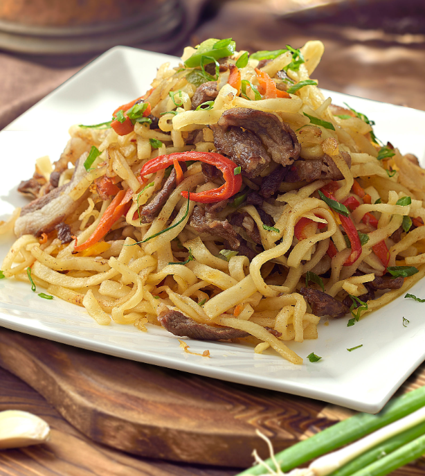

Tsuivan Recipes
Home

Description
Tsuivan is a traditional Mongolian stir-fry dish that combines handmade noodles, tender meat (often mutton), and a medley of vegetables. It is known for its savory flavors and the hearty satisfaction it provides, making it a beloved comfort food in Mongolian cuisine.
- Handmade noodles (or store-bought if preferred)
- Meat (commonly mutton, but beef or chicken can also be used)
- Vegetables (such as carrots, cabbage, onions, and potatoes)
Steps
- Prepare the Ingredients
- Cook the Noodles
- Stir-Fry the Meat
- Add the Vegetables
- Combine and Cook